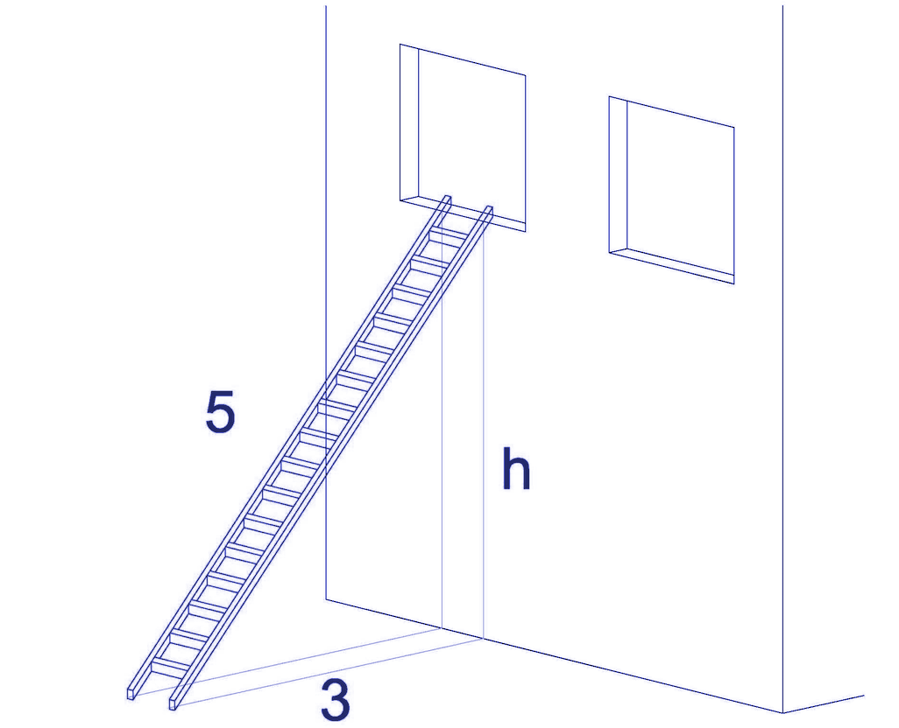

Descargar estos apunte en pdf o html
Enlaces
Además, de estos apuntes. Puedes seguir, de forma complementaria, este Tutorial Básico para aprender las bases de lenguaje.
Si abrimos el fichero Program.cs que se ha creado junto a nuestro proyecto podrás ver el siguiente código...
// See https://aka.ms/new-console-template for more information
Console.WriteLine("Hello, World!");
Como ves es una simple línea donde muestra el típico "Hola Mundo" en inglés.
Sin embargo, en versiones anteriores a C# 10 verás ejemplos de programa básico como el siguiente...
using System;
namespace ejemplo
{
public class Program
{
public static void Main()
{
Console.WriteLine("Hello World!");
}
}
}
En el fondo tiene que haber una clase básica que en el código anterior hemos llamado Program y dentro de ella un método estático (ya veremos lo que son) denominado obligatoriamente Main (Principal). Este método es el programa principal y se denomina así en C# y muchos otros lenguajes como herencia del lenguajes C.
Realmente, todo el código escrito en C# se ha de escribir dentro de una definición de clase y aunque nosotros no la definamos como en el segundo ejemplo. Internamente C# meterá el Console.WriteLine("Hello, World!"); dentro de un método Main que a su vez estará definido en una clase que C# definirá por nosotros.
💡 Tip: Si hacemos
Crtrl + .en VSCode sobre// See https://aka.ms/new-console-template for more informationnos ofrecerá cambiar al segundo formato.
Utilizaremos la palabra reservada class
La definiremos con la siguiente sintaxis...
class Identificador
{
<miembros>
}
Es posible definir varias clases en un archivo, pero lo normal en todos los lenguajes, es que haya una por archivo o fichero fuente. De hecho, si prescindimos de la clase Program y el Main de nuestro ejemplo. No podremos definir ningún tipo o clase antes del Console.WriteLine("Hello World!");
Es el punto de entrada de un programa, esto es, donde empieza a ejecutarse. Ya hemos vistos que si no lo definimos y ponemos instrucciones directamente. El compilador de C# definirá un Main por defecto y meterá todas esas instrucciones en el mismo.
Sólo puede haber uno y deberemos declararlo de las siguientes maneras, pero siempre con el modificador static:
public static void Main()
public static int Main()
public static int Main(string[] args)
public static void Main(string[] args)
...
Aunque lo vamos a ver en más profundidad cuando veamos el concepto de paquete y librería. Puede ser interesante hacer esta primera introducción. Podemos decir que un espacio de nombres es un identificador o etiqueta que me ayuda a agrupar y clasificar un conjunto de definiciones de tipos relacionadas.
En C# se definen de la siguiente manera:
namespace Espacio1 // Espacio1 es el identificador o etiqueta del namespace
{
// Definiciones de tipos dentro del namespace Espacio1
namespace Espacio11
{
// Definiciones de dentro del namespace Espacio1.Espacio11
class MiTipoEnEspacio11
{
...
}
}
}
También podría hacer...
namespace Espacio1.Espacio12
{
// Definiciones de dentro del namespace Espacio1.Espacio12
class MiTipoEnEspacio12
{
...
}
}
Para hacer referencia a un tipo, como por ejemplo una determinada clase, debo indicar la jerarquía de espacios de nombres seguidos por puntos. A esto se le denomina Nombre Completamente Calificado o NCC.
Espacio1.Espacio11.MiTipoEnEspacio11
Esto permite que diferente librerías puedan dar el mismo nombre a sus tipos o clases y poder distinguir entre una y otra.
System.Console.WriteLine("Hola Mundo");
MisDefiniciones.Console.Escribe("Hola Mundo");
En el ejemplo anterior tenemos definidas dos clases Console con el mismo identificador. Si estuvieran definidas en el mismo espacio de nombres, se produciría un conflicto por la ambigüedad de nombres. Sin embargo, podemos definir otra clase Console dentro del espacio de nombres MisDefiniciones y cuando queramos usar una u otra usaremos el NCC como se muestra en el ejemplo.
Para no tener que poner siempre el NCC cuando esté usando tipos y clases definidas dentro de un determinado namespace, puedo usar la cláusula using.
using System;
public class Program
{
public static void Main()
{
Console.WriteLine("Hello World!");
// en lugar de tener que poner.
System.Console.WriteLine("Hello World!");
}
}
Aunque no es muy común, podremos definir alias para clases repetidas en diferentes namespaces mediante la siguiente sintaxis: using <alias> = <NCC>;
using System;
using MiConsole = MisDefiniciones.Console;
...
Console.WriteLine("Hola Mundo"); // Equivale a System.Console.WriteLine("Hola Mundo");
MiConsole.Escribe("Hola Mundo"); // MisDefiniciones.Console.Escribe("Hola Mundo");
Volvamos al Program.cs que se ha creado en C# 10 donde solo hay un simple Console.WriteLine("Hello, World!"); y no tenemos ningún using System;.
Recordemos que incluir el espacio de nombres System es imprescindible para conocer la clase Console que es donde está definido.
¿Cómo puedes ser que el compilador no proteste y nos diga que no conoce la clase Console si no hemos hecho el using System; para que nuestro programa conozca todos los tipos definidos en dicho espacio de nombres?
La respuesta es la siguiente...
Si volvemos al ejemplo.csproj que creamos al crear el programa de consola, veremos la siguiente línea ..
...
<ImplicitUsings>enable</ImplicitUsings>
...
En la cual le estamos indicando al compilador que permita la definición de using implícitas, esto es, clausulas using que se suelen repetir en todos los ficheros fuente y que ahora se incluirán de forma global en todos ellos de forma automática o implícita. Pero ¿Cuales son estas directivas using que se usarán de forma global en todos los archivos de proyecto?
Al compilar por primera ver el proyecto si tenemos <ImplicitUsings>enable</ImplicitUsings> se generará el archivo Debug/net6.0/ejemplo.GlobalUsings.g.cs y en el tendremos definidos los espacios de nombres cuyos tipos serán conocidos en todos los fuentes del proyecto.
// <auto-generated/>
global using global::System;
global using global::System.Collections.Generic;
global using global::System.IO;
...
El contenido de este archivo es auto-generated lo cual significa que es generado automáticamente y aunque lo modifiquemos se volverá a generar por el compilador.
Fíjate que antes de la cláusula using aparece el modificador global el cual le indicará al compilador que ese using estará implícito en todos nuestros fuentes.
Resumen
A partir de C# 10 no hace falta poner el using System; o incluir definiciones de otros espacios de nombres al tener la directiva <ImplicitUsings>enable</ImplicitUsings> que se añade por defecto.
Sin embargo en versiones anteriores, deberemos indicarla al principio de nuestro programa si queremos que el compilador reconozca la clase Console.
Aunque mucho más adelante en el curso volveremos aquí y profundizaremos en este concepto para entenderlo correctamente.
En una primer momento apuntaremos, que también tenemos la posibilidad de indicar que todos los miembros de una clase estática (veremos lo que son más adelante) sean accesibles de forma global en todo nuestro proyecto.
¿Qué significa esto?. Bueno, fíjate que delante de la instrucción WriteLine("Hello, World!"); hemos tenido que poner Console. porque Console es una clase estática que define diferentes métodos de utilidad relacionados con la consola. Pero siempre tenemos que poner Console. antes de un WriteLine(..). Pero..., ¿Es posible hacer implícito el Console. igual que hemos quitado el System. al añadir el global using System;?
La respuesta es sí, si añadimos el modificador static después el using indicando que deseamos usar los métodos definidos en una determinada clase estática.
Por tanto, si definimos nuestros propios usings globales en un fuente nuevo en el proyecto denominado ejemplo/GlobalUsings.cs añadiendo la línea ...
global using static System.Console;
ahora podremos modificar nuestro program.cs y poner simplemente ...
WriteLine("Hello, World!");
y seguirá funcionando. Ya que es como si estuviéremos poniendo de forma implícita el NCC System.Console.WriteLine("Hello, World!");
Resumen
Deberían ser sustantivos significativos, evitando contracciones en identificadores cortos y redundancia dentro del contexto. Buscaremos pues nombres autodocumentados.
PascalCasing
int NumeroDePlantas;camelCasing
int numeroDePlantas;snake_casing
int numero_de_plantas;SCREAMING_SNAKE_CASING
const int NUMERO_DE_PLANTAS = 10;| 'INCORRECTO' | 'CORRECTO' |
|---|---|
| 6CajaTotal | TotalCaja6 |
| tot | TotalUnidades |
| ventlun | VentasLunes |
| longitudSalto | longitudSalto_m |
| diasSemana = 7 | DIAS_SEMANA = 7 |
Son identificadores o cláusulas propias del lenguaje.
No se pueden utilizar como identificadores. En realidad si se puede, siempre y cuando las precedamos del carácter '@', pero no deberíamos usarlas nunca.
Son siempre minúsculas.
Los editores de CSharp normalmente nos las resaltarán con algún color determinado.
abstract, as, base, bool, break, byte, case, catch, char, checked, class,
const, continue, decimal, default, delegate, do, double, else, enum, event,
explicit, extern, false, finally, fixed, float, for, foreach, goto, if,
implicit, in, int, interface, internal, lock, is, long, namespace, new, null,
object, operator, out, override, params, private, protected, public, readonly,
ref, return, sbyte, sealed, short, sizeof, stackalloc, static, string, struct,
switch, this, throw, true, try, typeof, uint, ulong, unchecked, unsafe, ushort,
using, virtual, void, while, ...
C# es (type-safe), esto significa que se garantizan los valores almacenados. Aquellos de uso más común, estarán resaltados en la columna de la derecha.
| Tipo | Descripción | Bits | Rango de valores | Alias |
|---|---|---|---|---|
| SByte | Bytes con signo | 8 | [-128, 127] | sbyte |
| Byte | Bytes sin signo | 8 | [0, 255] | byte |
| Int16 | Enteros cortos con signo | 16 | [-32.768, 32.767] | short |
| UInt16 | Enteros cortos sin signo | 16 | [0, 65.535] | ushort |
| Int32 | Enteros normales | 32 | [-2.147.483.648, 2.147.483.647] | int |
| UInt32 | Enteros normales sin signo | 32 | [0, 4.294.967.295] | uint |
| Int64 | Enteros largos | 64 | [-9.223.372.036.854.775.808, 9.223.372.036.854.775.807] | long |
| UInt64 | Enteros largos sin signo | 64 | [0-18.446.744.073.709.551.615] | ulong |
| Single | Reales con 7 dígitos de precisión | 32 | [1,5×10-45 - 3,4×10+38] | float |
| Double | Reales de 15-16 dígitos de precisión | 64 | [5,0×10-324 - 1,7×10+308] | double |
| Decimal | Reales de 28-29 cifras decimales | 128 | [1,0×10-28 - 7,9×10+28] | decimal |
| Boolean | Valores lógicos | 8 | true, false | bool |
| Char | Caracteres Unicode | 16 | ['\u0000', '\uFFFF'] | char |
| String | Cadenas de caracteres (pág 120) | Variable | El permitido por la memoria | string |
| Object | Cualquier objeto | Variable | Cualquier objeto | object |
Entero sin signo: Los literales llevarán el carácter U ó u
uint variable = 4000000000U;
Entero largo y con signo: Los literales llevarán el carácter L y U
long variable = 4000000000000000L;
ulong variable = 18000000000000000000UL;
Hexadecimal: Pondremos el prefijo 0x al valor en hexadecimal.
ushort n = 0x070F; // n = 0000 0111 0000 1111(2
ushort n = 0x_07_0F; // Desde C# 7
Binario desde C# 7: Pondremos el prefijo 0b al valor en binario.
ushort n = 0b0000011100001111; // n = 070F(16
ushort n = 0b_0000_0111_0000_1111; // Desde C# 7
Real de simple precisión: los literales llevarán el carácter F ó f
float variable = 333.44f;
float variable = 4.5E-15F;
Real de doble precisión: los literales llevarán el carácter D ó d
double variable = 124325.456859D;
double variable = 4.5e127d;
Decimal: Los literales llevarán el carácter M ó m
decimal variable = 64538756498374657493847594.45M;
Son las palabras reservadas true y false
bool estaFraccionado = true;
| Carácter | Código UNICODE | Código escape |
|---|---|---|
| Comilla simple | \u0027 | ' |
| Comilla doble | \u0022 | " |
| Carácter nulo | \u0000 | \0 |
| Alarma | \u0007 | \a |
| Retroceso | \u0008 | \b |
| Salto de página | \u000C | \f |
| Retorno de carro | \u000D | \r |
| Nueva línea | \u000A | \n |
| Tabulación horizontal | \u0009 | \t |
| Tabulación vertical | \u000B | \v |
| Barra invertida | \u005C | \ |
char c1 = 'F';
char c2 = '\'';
char c3 = '\u20AC'; \\ €
Los literales se definirán entre comillas dobles "literal"
string texto = "Esto es una cadena de caracteres.";
Dentro del literal de la cadena podremos incluir secuencias de escape de carácter, como las que hemos visto anteriormente.
string texto = "El precio es 20 \u20AC\nGRACIAS";
Si colocamos el carácter @ antes del literal de la cadena, se escapará cualquier secuencia de escape que se encuentre..
string texto = @"El precio es 20 \u20AC\nGRACIAS";
string texto = "El precio es 20 \\u20AC\\nGRACIAS";
A partir de C# 6 se pueden interpolar cadenas con las reglas de formato que ya hemos visto en la salida por pantalla.
Para ello colocaremos el carácter $ delante de la misma.
string t1 = "derecha";
int n = 99;
string t2 = $"\"Justificación a la {t1} con anchura 10: {n, 10}\"";
// Salida
// "Justificación a la derecha con anchura 10: 99"
int n = 88;
string t = $"Formato entero - {n:D5}";
// Salida
// "Formato entero – 00088"
✋ Importante: A partir de ahora usaremos este formato pues, además de hacer más legibles las cadenas, nos evitará errores derivados de una mala indexación en la sustitución.
A partir de C# 11 se han incluido los literales de cadena sin formato que pueden contener varias líneas y no hará falta usar caracteres de escape por lo podremos incluir cualquier carácter incluida la propia comillas doble. Son ideales para definir cadenas con objetos en formato JSON, XML, YAML etc.
var json = """
{
"nombre": "Juan",
"edad": 25
}
""";
Puesto que se ignorarán los espacios a la izquierda de las comillas triples de cierre.. El código anterior se puede escribir de la siguiente forma...
var json = """
{
"nombre": "Juan",
"edad": 25
}
""";
Como puedes ver se definen con tres comillas dobles y se cierran con otras tres comillas dobles. Esta sintaxis es similar a la de otros lenguajes como Kotlin.
🎓 Caso de estudio:
Supongamos el siguiente código donde definimos una variables que representan el nombre de una fruta y su cantidad en en kilogramos...
global using static System.Console;
string fruta1 = "Peras";
double cantidadFruta1_kg = 12.5d;
string fruta2 = "Manzanas";
double cantidadFruta2_kg = 2d;
Ahora nos piden que se muestren los datos con el siguiente especificación:
Usando interpolación de cadenas, representa cada fruta y su cantidad en una sola línea de tal manera que primero se mostrará el nombre alineado a la izquierda y con un ancho de columna mínimo de 10. A continuación irá la cantidad alineada a la derecha, con 2 decimales, un ancho de columna mínimo de 7 y seguido de un espacio y el texto de las unidades.
Dicha especificación la podremos representar de la siguiente forma ...
10 7
FFFFFFFFFFCCCCCCC
Fruta X,XX Kg
Por lo que la salida por sonsola final quedará...
Peras 12,50 Kg Manzanas 2,00 Kg
Una propuesta de solución podría ser la siguiente...
// Definiremos como constantes lo que sabemos que no cambia como son el
// texto con las unidades y las longitudes de ambas columnas.
const string UNIDADES = "Kg";
const int COLUMNA_NOMBRE = 10;
const int COLUMNA_CANTIDAD = 7;
// Posteriormente mostraremos cada fruta siguiendo las especificaciones
WriteLine($"{fruta1, -COLUMNA_NOMBRE}{cantidadFruta1_kg, COLUMNA_CANTIDAD:F2} {UNIDADES}");
WriteLine($"{fruta2, -COLUMNA_NOMBRE}{cantidadFruta2_kg, COLUMNA_CANTIDAD:F2} {UNIDADES}");
Como hemos visto, utilizaremos la clase Console definida en el namespace System.
Esta clase solo tiene sentido usarla en aplicaciones de consola.
Para la salida estándar utilizaremos los métodos Write y WriteLine (añade un salto de línea al final) que además me permiten formatear una salida numérica o de texto con parámetros.
System.Console.Write("Total: ");
System.Console.WriteLine(200);
// Salida
// Total: 200<Salto Línea>
La sintaxis es: Console.Write($"<texto>{idVariable,M:FormatString}<texto>");
idVariable Identificador de la variable que se desea mostrar. También puede ser un literal de cadena o un literal numérico.
M la alineación. (+M a la derecha y –M a la Izquierda)
FormatString indicará como se deben mostrar un dato numérico.
Podrá tomar los siguientes valores:
| Valor | Significado |
|---|---|
| C | Muestra el número como una unidad monetaria, usando el símbolo y las convenciones de la moneda local. |
| D | Muestra el número como un entero decimal. |
| E | Muestra el número usando notación exponencial (científica). |
| F | Muestra el número como un valor en coma fija. |
| G | Muestra el número como un valor entero o en coma fija, dependiendo del formato que sea más compacto. |
| N | Muestra el número con comas incorporadas. |
| X | Muestra el número utilizando notación hexadecimal. |
int valor = 99;
Console.WriteLine($"\"Justificación a la {"izquierda"} con anchura 10: {valor,-10}\"");
// Salida
// "Justificación a la izquierda con anchura 10: 99 "
int valor = 99;
Console.WriteLine($"\"Justificación a la {"derecha"} con anchura 10: {valor,10}\"");
// Salida
// "Justificación a la derecha con anchura 10: 99"
int valor = 88;
Console.WriteLine($"Formato entero - {valor:D5}");
// Salida
// Formato entero - 00088
double valor = 888.8D;
Console.WriteLine($"Formado exponencial - {valor:E}");
// Salida
// Formado exponencial – 8,888000E+002
double valor = 888.8888D;
Console.WriteLine($"Formato de punto fijo - {valor:F3}");
// Salida
// Formato de punto fijo – 888,889
double valor = 888.8888000D;
Console.WriteLine($"Formato general - {valor:G}");
// Salida
// Formato general – 888,8888
double valor = 8888888.8D;
Console.WriteLine($"Formato de número - {valor:N}");
// Salida
// Formato de número – 8.888.888,80
int valor = 88;
Console.WriteLine($"Formato hexadecimal - {valor:X4} Hex");
// Salida
// Formato hexadecimal - 0058 Hex
Para la entrada estándar utilizaremos los métodos Read que lee el siguiente carácter desde stdin (-1 si esta vacía) y ReadLine que lee hasta final de línea.
string texto = Console.ReadLine();
Console.WriteLine(texto);
Es importante tener en cuenta que esta entrada, solo funcionará si leemos cadenas.
Todos los tipos del CTS tienen definido el método tipo Parse(string texto) que transforma de cadena al tipo.
int entero = int.Parse(Console.ReadLine()!);
double real = double.Parse(Console.ReadLine()!);
Si el texto leído no se puede convertir al tipo correspondiente se producirá un error de ejecución y el programa finalizará.
Puesto que ReadLine() devuelve un string? que puede ser Nullable y Parse(string p) espera un string no anulable. Deberemos añadir una admiración al final ! para que no nos salga un aviso. Esto hace que si no hay cadena introducida se produzca un error y finalice el programa. Más adelante profundizaremos en el concepto de Nullable y Non-nullable.
En este bloque vamos a hacer una introducción a una serie de conceptos y definiciones muy importantes y que deberemos recordar, pues iremos hablando de ellos a lo largo del curso y son imprescindibles de saber.
Como consecuencia del lenguaje C, en la mayoría de lenguajes posteriores como C++, Java, C#, etc., el almacenamiento de los datos de un programa se divide en dos zonas las cuales vamos intentar explicar de forma simplificada o conceptual...
Heap o montón.
? se convertirá en anulable y por tanto se podrá asignar a null.default se evaluará al valor por defecto para el tipo o a null si es anulable.char, int, double, ... menos string y unas tipos que veremos más adelante como struct y enum.// Entero no anulable al que asigno 5 y con valores posibles de 0 a 255
byte a = 5;
// Entero no anulable al que asigno default para byte, que es 0 y con valores posibles de 0 a 255
byte b = default;
// Entero anulable al que asigno default para byte, que ahora es null por ser anulable
// y con valores posibles null o de 0 a 255
byte? c = default;
// Tras la inicialización tendré en memoria: a(5) b(0) c null
// Muestra: a(5) b(0) c()
Console.WriteLine($"a({a}) b({b}) c({c})");
c = a;
// Muestra: a(5) b(0) c(5)
Console.WriteLine($"a({a}) b({b}) c({c})");
c = 255;
// Muestra: a(5) b(0) c(255)
Console.WriteLine($"a({a}) b({b}) c({c})");
// Como 256 no es un valor válido para byte da la vuelta y empieza en 0
c = (byte)(c + 1);
// Muestra: a(5) b(0) c(0)
Console.WriteLine($"a({a}) b({b}) c({c})");
a = null; // Error de compilación
c = null; // Válido
string. Ya usaremos y definiremos algunos de estos tipos durante el curso.A la derecha tienes una representación gráfica de como se almacenan los datos en memoria para el siguiente código de acuerdo a lo especificado en los anteriores puntos.
// Tipo Valor
int n = 4;
// Tipo Referencia
string texto1 = "Hola";
// Tipo Referencia que apunta a texto1
string texto2 = texto1;
La liberación de espacio ocupado por los datos en el Heap, la hace el Recolector de Basura o Garbage Collector (GC) cuando esos datos dejan de estar referenciados por una variable en el Stack.
A partir de C# 10, los proyectos tienen la siguiente configuración por defecto.
<Project Sdk="Microsoft.NET.Sdk">
<PropertyGroup>
...
<Nullable>enable</Nullable>
...
</PropertyGroup>
</Project>
Esto hace que se genere un aviso (Warning) si asigna un literal null a un tipo referencia en algún momento de la ejecución.
Por tanto si hago las siguientes asignaciones ...
string texto1 = null;
string texto2 = default; // El valor por defecto para un tipo referencia en null.
Se generará un aviso similar a este: "Se va a convertir un literal nulo o un posible valor nulo en un tipo que no acepta valores NULL"
Por eso al igual que sucede con los tipos valor, deberé de marcarlos como anulable (nullable) en la definición con la ?.
string? texto1 = null;
string? texto2 = default;
Este comportamiento es similar al de otros lenguajes modernos como Rust o Kotlin.
// La variable referencia a un objecto string en memoria, que contiene la cadena hola a -> (hola)
string a = "hola";
// Aviso de compilación al estar activado <Nullable>enable</Nullable> pues default vale null y con este
// directiva activada no se puede asignar null directamente a un tipo referencia.
string b = default;
// No generará ningún aviso porque estamos especificando de forma explícita que
// se pueda asignar un null al declarar la variable.
// Se comportará como si hubiéramos hecho string c = default;
string? c = default;
// Tras la inicilización tendré en memoria: a->(hola) b->() c->null
// Muestra: a->(hola) b->() c->()
Console.WriteLine($"a->({a}) b->({b}) c->({c})"); // Muestra: a->(hola) b->() c->()
c = a;
// Muestra: a->(hola) b->() c->a y por tanto c->a->(hola)
Console.WriteLine($"a->({a}) b->({b}) c->a y por tanto c->a->({c})");
c = "Pepe";
// Muestra: a->(hola) b->() c->(Pepe)
Console.WriteLine($"a->({a}) b->({b}) c->({c})");
a = null; // Aviso de compilación.
c = null; // Válido en todos los casos.
Nota
Si no has entendido bien la diferencia entre los tipos de valor y referencia, no te preocupes, lo iremos viendo a lo largo del curso. Por ejemplo, cuando hablemos de Fechas y Horas o estructuras. Al final de este curso, deberías de tener claro este concepto.
Enlaces
Documentación oficial de Microsoft sobre Operadores y expresiones en C#.
Vamos a ver los más comunes a la hora de formar expresiones en la mayoría de lenguajes de programación. Muchos otros iremos hablando de ellos a lo largo del curso conforme veamos conceptos que nos permitan aplicarlos.
Tipos atendiendo al número de operadores
| Tipo | Ejemplo |
|---|---|
| Unarios | (exp.)++ |
| Binarios | (exp.1) + (exp.2) |
| Ternarios | (exp.1) ? (exp.2) : (exp.3) |
Tipos atendiendo a los valores con los que operan
| Tipo | Ejemplo |
|---|---|
| Operan con escalares | (exp. eval. a escalar) * (exp. eval. a escalar) |
| Operan con booleanos | (exp. eval. a bool) && (exp. eval. a bool) |
| Operan con bits | (bits mem. de exp1) & (bits mem. de exp2) |
Tipos atendiendo al resultado
| Tipo | Ejemplo |
|---|---|
| Resultado escalar | (exp.1) / (exp.2) → Se evalúa a escalar |
| Resultado booleano | (exp.1) >= (exp.2) → Se evalúa a bool |
| Resultado booleano | (exp.1) && (exp.2) → Se evalúa a bool |
Casting o Conversión Explícita
Sintaxis: (tipo)operando
float a = 2.3F;
double b = a;
long c;
// Casteamos el resultado de la expresión a / b
c = (long)(a / b);
Forzamos un cambio de un tipo a otro.
Normalmente se utiliza para poder realizar algún tipo de operación o forzar el resultado en algún tipo determinado.
Si utilizamos conversión implícita con el operador '=' el compilador nos avisará, pero con la explícita no.
Peligro
Deberemos llevar especial cuidado con la conversión de tipos de mayor a menor tamaño, pues puede que se pierda información. Por ejemplo ...
int a = 1000000000;
short b = (short)a; // b = -16128
Unarios de Pre/Post incremento y decremento en 1
i = ++j; // Equivale a hacer j=j+1; i=j;
i = j--; // Equivale a hacer i=j; j=j-1;
typeof(<nombre tipo de dato>)
Devuelve un objeto del tipo System.Type que guarda información sobre el tipo de datos sobre lo que lo apliquemos.
Type t1 = typeof(double);
Type t2 = typeof(int);
Console.WriteLine(t1);
Console.WriteLine(t2);
!(<expresión booleana>)
Negación lógica, devuelve el valor lógico inverso de una expresión booleana.
bool r = !(5 > 7) // r se evaluará a true
-(<expresión escalar>)
Aplica el signo negativo al resultado escalar de la derecha.
int r = -(5 - 7) // r se evaluará a 2
Son poco comunes porque no se suelen utilizar muy a menudo o no existen en otros lenguajes. Por lo que puedes saltarte su lectura si no te interesa.
nameof(<identificador>)
Devuelve un literal de cadena con el identificador de una variable, ...
int total = 4;
Console.WriteLine(total); // Muestra -> 4
Console.WriteLine(nameof(total)); // Muestra -> total
+(<expresión escalar>) (No muy común)
Aplica el signo positivo al resultado escalar de la derecha.
int r = +(5 - 7) // r se evaluará a -2
~(<expresión>) (No muy común)
Negación de bit. Invierte los bits en memoria de lo que estemos evaluando en la expresión.
Se obtiene con la combinación (Alt + 126) o (Alt Gr + 4 seguido de espacio)
byte r = ~0b10011011; // r se evaluará a 0b01100100;
checked(<expresión escalar>) (No muy común)
Detecta condiciones de desbordamiento en un expresión, generando un error durante la ejecución.
short d1 = 20000, d2 = 20000;
short miShort = checked((short)(d1 + d2));
Console.WriteLine(miShort);
unchecked(<expresión escalar>) (No muy común)
Ignora condiciones de desbordamiento en un expresión, continuando con la ejecución.
short d1 = 20000, d2 = 20000;
short miShort = unchecked((short)(d1 + d2));
Console.WriteLine(miShort);
| Operador | Propósito |
|---|---|
| * | Multiplicación |
| / | División |
| % | Módulo |
| + | Suma |
| - | Resta |
El % requiere que el segundo operador no sea nulo.
Al contrario que en otros lenguajes pueden ser reales.
El de división / podemos tener varios casos:
int / int = Parte entera resultado.float / float = floatfloat / int o int / float = floatDispondremos de los triviales operadores de comparación x < y, x > y, x <= y, x >= y que se evalúan a un valor booleano.
Con un poco menos de prioridad los de igualdad x == y, x != y que también se evalúan a un valor booleano.
Un error típico de principiante, es confundir la asignación = con la comparación ==
En este apartado también podremos incluir el operador is, que me ayudará a preguntar a un identificador si es de un determinado tipo y lo usaremos más adelante al ver POO.
También se le conoce como operador de reflexión y tendrá la siguiente sintaxis: <id> is <tipo>
Devolverá un booleano indicándome si el operador es del tipo o no.
int i = 0;
bool test = i is int;
// test = true;
AND: (<expresión booleana>) && (<expresión booleana>)
Tabla de verdad...
| expresión | evaluación |
|---|---|
true && true |
true |
true && false |
false |
false && true |
false |
false && false |
false |
OR: (<expresión booleana>) || (<expresión booleana>)
Tiene menos prioridad que el AND
Tabla de verdad...
| expresión | evaluación |
|---|---|
true || true |
true |
true || false |
true |
false || true |
true |
false || false |
false |
También se le conoce como null coalescing operator.
Tradicionalmente no se ha usado, pero recientemente se está incrementando su uso. Podemos encontrarlo con similar funcionamiento en Swift, Kotlin, JS o PHP y con diferente sintaxis en otros lenguajes.
Se evalúa de derecha izquierda y tiene la siguiente sintaxis: (tipo o expresión anulable) ?? (tipo o expresión anulable)
int? a = null, b = 5;
Console.WriteLine(a ?? b ?? 3);
En el código de ejemplo hará:
b ?? 3 pero como b no es null se evaluará a su valor 5.a ?? 3 al ser a null se evaluará a 3.Si int? b = null entonces toda la expresión se evaluaría a 3;
Se evalúa de derecha izquierda y tiene la siguiente sintaxis: (tipo o expresión anulable) ??= (tipo o expresión anulable)
int? a = null, b = 5;
a = a ?? b;
// Equivale a...
a ??= b;
Lo veremos más adelante, cuando veamos programación orientada a objetos básica.
Sintaxis: Condición ? Consecuencia : Alternativa
Condición: Es una expresión que se evalúa a un booleano.
Consecuencia: A lo que se evalúa toda la expresión si Condición se evalúa a true.
Alternativa: A lo que se evalúa toda la expresión si Condición se evalúa a false.
Aviso
Las expresiones Consecuencia y Alternativa se deben evaluar al mismo tipo de dato.
string a = "Hola", b = "Adiós";
// Error de compilación, no se puede asignar el int 0 al string c.
// Ya que Consecuencia es string y Alternativa es int.
string c = (a == b) ? "Iguales" : 0;
(a > b) ? a : b; // Si a mayor que b entonces a sino b.
Trataremos de evitar usarla o abusar del mismo, si obtenemos expresiones ofuscadas o podemos simplificar usando otros operadores.
int? a = 3, b = 11, c = null;
int? d = a > 0 && b <= 10 ? ++a * b : c != null ? c : 5;
// Podríamos reescribirla como...
int? d = (a > 2 && b <= 10)
? (++a * b)
: (c ?? 5);
| Orden | Nombre | Asociatividad | Operador |
|---|---|---|---|
| 0 | Principales | izq. a der. | x.y, f(x), a[i], x?.y, x?[y], x++, x--, x!, new,typeof, checked, unchecked, default, nameof, delegate, stackalloc |
| 1 | Unarios | izq. a der. | +x, -x, !x, ~x, ++x, --x, ^x, (T)x, await, &x, *x, true and false |
| 2 | Intervalo | izq. a der. | x..y |
| 3 | switch como expresión |
izq. a der. | x switch { v1 => expr, v2 => expr, _ => expr } |
| 4 | Multiplicación, división, módulo división | izq. a der. | x * y, x / y, x % y |
| 5 | Suma y concatenación de cadenas, resta | izq. a der. | x + y, x – y |
| 6 | Desplazamiento de bits | izq. a der. | x << y, x >> y |
| 7 | Comparaciones, is, as | izq. a der. | x < y, x > y, x <= y, x >= y, is, as |
| 8 | Igualdad, desigualdad | izq. a der. | x == y, x != y |
| 9 | AND de bits | izq. a der. | x & y |
| 10 | XOR de bits | izq. a der. | x ^ y |
| 11 | OR de bits | izq. a der. | x | y |
| 12 | AND lógico | izq. a der. | x && y |
| 13 | OR lógico | izq. a der. | x || y |
| 14 | Operador de uso combinado de Null | der. a izq. | x ?? y |
| 15 | Condicional ternario | der. a izq. | c ? t : f |
| 17 | Asignación y Asignación compuesta. | der. a izq. | x = y, x += y, x -= y, x *= y, x /= y, x %= y, x &= y,x | = y, x ^= y, x <<= y, x >>= y, x ??= y, => |
| 18 | Evaluación Múltiple | izq. a der. | x, y, ..., z |
Ejemplo 1:
Escribe la expresión algorítmica en C# para la siguiente expresión aritmética usando el menor número de paréntesis:
int r = (a * a / (b – c)) + (d – e) / (f - g * h / j);
Ejemplo 2:
Evalúa la expresión int a = -(4 * 4 / 2 - (4 * (8 % 2) + 12)) + 8 / 2 % 2;
paso a paso teniendo en cuenta la precedencia de los operadores aritméticos.
int a = -(4 * 4 / 2 - (4 * (8 % 2) + 12)) + 8 / 2 % 2;
int a = -(4 * 4 / 2 - (4 * 0 + 12)) + 8 / 2 % 2;
int a = -(4 * 4 / 2 - (0 + 12)) + 8 / 2 % 2;
int a = -(4 * 4 / 2 - 12) + 8 / 2 % 2;
int a = -(16 / 2 - 12) + 8 / 2 % 2;
int a = -(8 - 12) + 8 / 2 % 2;
int a = -(-4) + 8 / 2 % 2;
int a = 4 + 8 / 2 % 2;
int a = 4 + 4 % 2;
int a = 4 + 0;
int a = 4;
Ejemplo 3:
Evalúa la expresión bool a = 35 > 47 && 9 == 9 || 35 != 3 + 2 && 3 >= 3;
paso a paso teniendo en cuenta la precedencia de los operadores aritméticos.
bool a = 35 > 47 && 9 == 9 || 35 != 3 + 2 && 3 >= 3;
bool a = 35 > 47 && 9 == 9 || 35 != 5 && 3 >= 3;
bool a = false && 9 == 9 || 35 != 5 && 3 >= 3;
bool a = false && 9 == 9 || 35 != 5 && true;
bool a = false && true || 35 != 5 && true;
bool a = false && true || true && true;
bool a = false || true && true;
bool a = false || true;
bool a = true;
Ejemplo 4:
Sean x, y, z, u, v, t, w variables que contienen respectivamente los valores 2, 3, 4, 5, 6 y 7
double x=2d, y=3d, z=4d, u=5d, v=6d, t=7d, w;
¿Qué almacenarán después de ejecutar cada una de las siguientes sentencias?
Realiza una traza creando un tabla donde cada una de las filas sea la expresión que estoy evaluando en ese momento y las columnas el valor de las variable.
📌 Nota: Puedes ver el resultado de evaluar estas expresiones mediante la instrucción:
Console.WriteLine($"x={x} - y={y} - z={z} - u={u} - v={v} - t={t} - w={w}");
| x | y | z | u | v | t | w | |
|---|---|---|---|---|---|---|---|
| Valor Inicial | 2 | 3 | 4 | 5 | 6 | 7 | - |
x++; |
3 | 3 | 4 | 5 | 6 | 7 | - |
y = ++z; |
3 | 5 | 5 | 5 | 6 | 7 | - |
t = v--; |
3 | 5 | 5 | 5 | 5 | 6 | - |
v = x + (y*=3) / 2; |
3 | 15 | 5 | 5 | 10,5 | 6 | - |
w = x + y / 2; |
3 | 15 | 5 | 5 | 10,5 | 6 | 10,5 |
Vamos a juntar todo lo que hemos visto hasta ahora y a escribir nuestros primeros programas simples. Para ello, vamos definir dos conceptos necesarios que hemos usado pero que no hemos definido formalmente como son instrucciones y comentarios.
Cada instrucción se separa o va delimitada por el carácter ';'
Puede contener asignaciones, comentarios e instrucciones de:
Permiten introducir texto en mitad del código y que sea ignorado.
La sintaxis es parecida en la mayoría de lenguajes.
Máxima
Si un código hay que comentarlo, posiblemente no esté bien hecho
// comentarios de una línea
/*
comentarios de
varias líneas
*/
🧠 Recuerda:
Ctrl + K + Cpara comentar yCtrl + K + Upara descomentar la selección.
Ejemplo 1:
Algoritmo que toma como dato de entrada la base y la altura de un triángulo en centímetros y calcula el área del mismo. El resultado se mostrará por pantalla. Para calcular el área de un triángulo debes aplicar la fórmula indicada.
Ejecución del programa:
Introduce la base del triángulo en cm: 8 Introduce la altura del triángulo en cm: 9 El área del triángulo es: 36 cm²
public class Program
{
public static void Main()
{
// Entrada de datos
Console.Write("Introduce la base del triángulo en cm: ");
double baseTriangulo_cm = double.Parse(Console.ReadLine()!);
Console.Write("Introduce la altura del triángulo en cm: ");
double alturaTriangulo_cm = double.Parse(Console.ReadLine()!);
// Calculo del área
double areaTriangulo_cm = baseTriangulo_cm * alturaTriangulo_cm / 2;
// Salida de datos
string salida = $"El área del triángulo es: {areaTriangulo_cm} cm²";
Console.WriteLine(salida);
}
}
Ejemplo 2:
Tenemos una escalera apoyada en la ventana de un edificio y sabemos la longitud de la escalera y la distancia de la pared a la que está apoyada. Queremos saber la altura a la que se encuentra la ventana aplicando el teorema de Pitágoras. Para ello, vamos a usar la siguiente fórmula .
Por ejemplo, para la imagen de ejemplo donde la escalera mide 5 metros y la distancia de la pared es de 3 metros, la altura a la que se encuentra la ventana es de 4 metros. Puesto que metros.

Realiza un programa que pida la longitud de la escalera y la distancia de la pared en metros y calcule la altura a la que se encuentra la ventana. El resultado se mostrará por pantalla.
Pista
En la clase Math de C# tenemos una función que nos permite calcular la raíz cuadrada de un número Math.Sqrt(valor) así como otras funciones matemáticas y constantes que nos pueden ser útiles. Puedes verlas en la documentación oficial de Microsoft aquí.
Ejecución del programa:
Introduce la longitud de la escalera en metros: 5 Introduce la distancia de la pared a la base de la escalera en metros: 3 La altura a la que se encuentra la ventana es: 4 metros.
public class Program
{
public static void Main()
{
Console.Write("Introduce la longitud de la escalera en metros: ");
double longitudEscalera_m = Convert.ToDouble(Console.ReadLine()!);
Console.Write("Introduce la distancia de la pared a la base de la escalera en metros: ");
double distanciaPared_m = Convert.ToDouble(Console.ReadLine()!);
double alturaVentana_m = Math.Sqrt(longitudEscalera_m * longitudEscalera_m - distanciaPared_m * distanciaPared_m);
string salida = $"La altura a la que se encuentra la ventana es: {alturaVentana_m} metros.";
Console.WriteLine(salida);
}
}
Para entender bien el funcionamiento vamos a definir el concepto de bloque de instrucciones...
Usaremos llaves para delimitar bloques donde va a ir uno o más instrucciones.
{
// Varias instrucciones de código.
}
Se pueden anidar bloques pero no pueden declararse variables con el mismo nombre en ellos.
Un bloque anidado irá tabulado o 'indentado' dentro del bloque que lo contiene.
{
int i;
...
{
int i; //ERROR, i esta declarada en un ámbito envolvente
...
}
}
Bloques hermanos pueden tener variables con el mismo nombre.
{
int i;
...
}
...
{
int i;
...
}
Como hemos comentado al principio del tema, tenemos un bloque de instrucciones principal denominado Main() y si no lo indicamos, supondremos que cualquier variable está definido dentro del él.
Supongamos el siguiente código y vemos como se comporta la memoria.
class Program
{
static void Main()
{
int a = 4; // Valor
char b = 'A'; // Valor
string c = "Hola"; // Referencia
// Bloque anidado.
{
int d = 8; // Valor
string e = "Adios"; // Referencia
string f = c; // Referencia
}
}
}
Tip
Tras ver este ejemplo, repasa los puntos de las definición de tipo valor y referencia y trata de asociarlos con el mismo.
Como se ve en el esquema de memoria, tras entrar en el bloque del Main (línea 4), se apilan en el Stack las declaraciones de las líneas 5, 6 y 7. Pero c al ser un tipo referencia, apunta a donde se encuentre el dato en el Heap.
El bloque se cierra en la línea 15. Hasta ahí será el scope (alcance) o ámbito de las variables y al salir de él bloque se 'desapilarán'.
En la línea 10 se abre un nuevo bloque y se vuelven a apilar las declaraciones. La variable e al ser un tipo referencia su dato se almacerá en el Heap. Sin embargo f tomará el valor de c y por tanto ambas referenciarán o 'apuntarán' al mismo sitio en el Heap.
En la línea 14 se cierra el bloque anidado y pon tanto acaba el scope o ámbito de las variables declaradas dentro del mismo. Sucediendo lo siguiente...
Se desapilan del Stack las variables d, e y f pasando a apuntar la cabeza de la pila a c.
📌
Nota:Realmente no se 'borran', simplemente el espacio que ocupaban en la pila queda libre para ser usado en futuras declaraciones.
Puesto que el espacio que ocupa el dato "Adios" en el Heap ya no es referenciado por ninguna referencia en el Stack, este será liberado en el futuro por el recolector de basura GC para ser usado más adelante. Sin embargo no sucede los mismo con "Hola" que aún sigue referenciado por la variable c.
En la línea 15 se cierra el bloque del Main y pon tanto acaba el scope o ámbito de las variables declaradas dentro del mismo. Sucediendo lo mismo que antes...
"Hola" referenciado por c deja de estarlo y por tanto será eliminado en la siguiente pasada del GC.